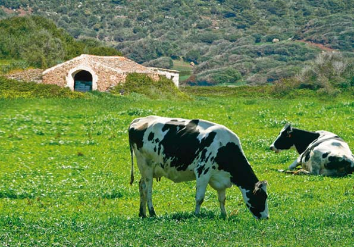
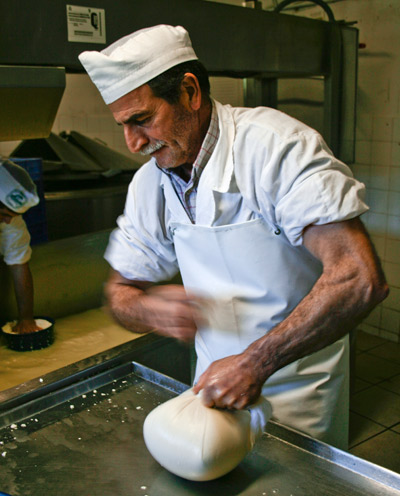

Agriculture - Cattle. An Appealing and model environment
The first thing that strikes the visitor to Menorca is the network of dry stone walls with rustic gates made from wild olive wood, an austere and ingenious way of using up the abundant stones on the island and separating crop fields from pasture for the cattle.
 From prehistoric times Menorcan agriculture has specialised in cattle, the early Greek sailors in the Mediterranean christened the island Meloussa (land of cattle). During the middle ages and the British occupation in the XVIII century sheep farming dominated, the wool produced was much appreciated in European markets.
From prehistoric times Menorcan agriculture has specialised in cattle, the early Greek sailors in the Mediterranean christened the island Meloussa (land of cattle). During the middle ages and the British occupation in the XVIII century sheep farming dominated, the wool produced was much appreciated in European markets.
In the XX century dairy farming predominated and continues to this day. The star product is the farmhouse cheese made in the traditional way using a “fogasser” (cheese cloth), a simple technique managed expertly by the farmer and his wife. This gives the cheese its traditional square shape with rounded corners. The high quality cheese is also used in the production of processed cheeses. Cheese production continues to play a key part, as well as meat products, beef, lamb and pork, this being used mainly in the local sausages, sobrasada, “camot/caixot” or “botifarró”.
 The Menorcan climate, marked by its proximity to the sea and the influence of the Tramontana wind gives flavour to the products of the land and these combined with fish and shellfish from its crystal waters constitutes the base for exquisite food.
The Menorcan climate, marked by its proximity to the sea and the influence of the Tramontana wind gives flavour to the products of the land and these combined with fish and shellfish from its crystal waters constitutes the base for exquisite food.
The work by generations of people on the Menorcan farms has humanised the countryside which is exceptionally preserved for the eastern Mediterranean, and was the base for the island to be declared a Biosphere reserve by UNESCO in 1993.
Agriculture nowadays is looking towards the future, long forgotten practices, vineyards, olive oil, honey, and other new initiatives. All of this is marked by a gradual implantation of ecological farming. More needs to be done to commercialize the local products and to extend the “Protected designation of origin” (appellation) that permits the goods to be correctly identified and valued.